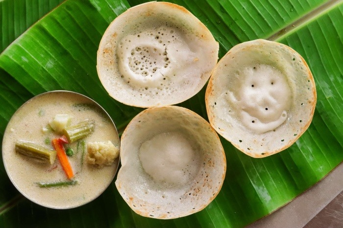

INGREDIENTS:
- 1 cup Raw Rice/Idly Rice
- 2 cup Ration Rice/Dosa Rice
- 1 tbsp Black Gram
- 1/2 tsp Fenugreek Seeds
- 1/2 cup Raw Coconut
- 80 ml Coconut Milk
- 7. 1 tbsp Sugar
- Salt
- 1/2 tsp Baking Soda/Cooking Soda
- 100 ml Drinking Soda
INSTRUCTIONS:
Wash the Dosa Rice, Raw Rice, Black Gram and Fenugreek Seeds and soak
for five hours. Remove water and grind the Rice into a soft batter.
(Check the grinding tips). Add Sugar, Salt and Coconut Milk to the
batter and ferment it for 16 hours. Mix Cooking Soda and drinking Soda
in a glass. Take half of the fermented batter. Add Soda to it and mix
it. If you dip a
finger in the batter, the last drop of the batter has to fall off
the finger before you count from 1 to 10. Pour the batter on a very hot
pan, spread it in circular motions till the edges,
cover it and
cook on medium flame. (See the tips on spreading the batter) After about
3 minutes, the Appam comes off the pan. Serve it hot with thin Coconut
Milk with sugar or spicy Kurma.